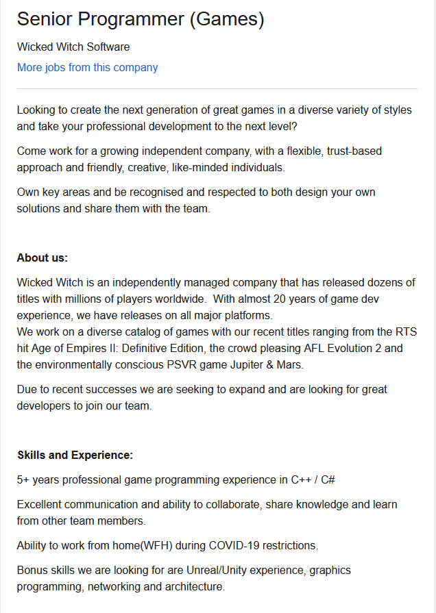

CONTACT PHONE: 0404061619 EMAIL: S3904712@student.rmit.edu.au
Basketball Rugby League Video games Travelling Surfing Going to the beach Computers Motorbikes
IT first grabbed my attention in 2009 when I participated in the advanced learning program in High school and got given a new MacBook laptop to use in classes and to take home. Having the ability to explore the uses of the laptop and get familiar with how it works really peaked my interest in computers. From there on I always loved using computers for everything and now, since joining the workforce after graduation I have seen how powerful IT can be. The use of computers and programs in everyday life advancing industries fascinates me and I wish to explore just how far it can go.
My experience in the field has been self-taught and through trial and error. I completed courses at school in multimedia and photography and am now heavily relied on in my workplace to fix any IT problems and to implement new technology into our workspace.
I wish to explore creative and innovative creation such as Video games and emerging technologies such as NFT’s (non-fungible tokens) as they have grabbed my attention recently through how it has begun changing artistic creations. Examples of this are Kings of Leon selling their album as an NFT or Tony Hawk filming his last ever tricks as NFT’s or the NBA Topshot craze where great moments in the games are being sold and traded as digital trading cards.
I enrolled in my Bachelors of Information and Technology at RMIT because it perfectly fit my schedule and it offered various units that I am interested in that will allow me to expand my skillset and knowledge to assist me in getting a job within the industry.
I wish to expand my skillset and knowledge in the IT field and am anticipating to learn various coding languages and to be educated on the importance of IT. I am looking forward to learning about security, impacts on world events and marketing to prepare myself to enter this industry and get a position in my dream role.


The Myers-Briggs test has shown me to be best equipped as an analyst. I agree with the test results as it shows that I am quite introverted, intuitive, a thinker, judge the situation thoroughly and assertive. All in all I think that these results show positive attributes that will benefit me when working in a team. I think being analytical, deliberate, and open to new ideas will help me be a team player who looks for solutions from all angles and perspectives from the team. Furthermore, as I’m an introvert who is an auditory learner, I believe this will influence my behavior in the team as I will make sure to listen to all team members and be able to easily understand their perspectives. However, my introverted nature may prove a challenge as I’m quieter in nature and am still learning how to speak up. When forming a team, I would try to bring in alternative personality types that balance the team by filling in my weakness areas. For example, across all tests, I was highlighted to be skeptical. To balance this out in the team, I would bring in an ‘anything is possible’ teammate, so that when we work together, we can find an innovative solution or product that is full proof.
Ideal job My ideal job is a Senior Games Programmer with Wicked Witch Software. The company has developed many popular titles worldwide, in particular ‘Age of Empires II: Definitive Edition’. Senior Games Programmer is a role for someone looking to create the next popular video game. It asks for creativity, solution design and teamwork. This is my ideal role because it combines my passions for video gaming and programming. I’ve spent many (many many) hours playing some of their high quality games, and I’m keen to help create the next generation of video games. Skills, qualifications and experience required The job requires creativity, problem solving, communication and collaboration skills, and at least 5 years of professional game programming in C++ or C#. It would also be helpful but not necessary to the role if I had experience in Unreal and Unity, as well as networking, architecture, and graphic programming.
Skills, qualifications and experience I have I currently don’t have the technical skills or experience they require; however, I am working towards this. I do have strong communication and collaboration skills, that I have developed and demonstrated working alongside a diverse range of external and internal stakeholders (from mechanics to frustrated customers). I have developed problem solving skills from finding creative solutions to logistic and operational challenges, especially those formed through COVID19 at my workplace. An example of this is, worldwide border closures and various lockdowns have delayed parts from being delivered to Australia in a timely manner, and customers have been frustrated by the considerably extended wait time when their bikes are in the shop. To solve this problem, I have built connections with alternative local suppliers and created a new pre-ordering process to replace the old ‘order as you go’ process. The new process looks at historical trends of parts needed, and new bikes released, and accurately orders stock in advance to minimize customer wait time. How will I get these skills, qualifications and experiences? I plan on obtaining these skills through my studies at RMIT and through self-learning. I believe that the best experience I will get to practice these skills is free-lancing work and through my courses at University. The hardest part of acquiring these skills I believe would be the real world experience in which I do free-lance work and put my skills to the test.
Develop a website for booking and tracking mechanic jobs for a Motorcycle workshop by using HTML language through Visual Code and then using a server to host the website. Customer pain point is calling up to see if bikes are ready as mechanics can never give more than an estimate as they won’t know timings until it’s actually being worked on. Customers don’t understand the jargon and the shop workers skillsets are working with bikes and not necessarily strong in dealing with customers. Overall transparency and communication gap (Find customer research/verbatim) therefore this is the customer problem (please don’t delete this, will reword later) – features of the product (booking function, job tracking, push notifications for communications with customers and transparency, ‘job add ons’ i.e. coming in for a service, please add on blue slip, job history timeline, registration information, This will bridge the gap between customer and the workshop. Saving time and keeping the customer up to date with following their workshop job and keeping track of what was done in each service. Things such as brake fluid and coolant are changed at 2-3 year periods where as the annual service changes oil and general safety over the motorcycle. No one remembers what was done to their motorcycle 3 years ago and paper trails of these records are easily lost.
Software that needs to be written This project will require a html coding skillset which I am currently learning through my bachelors. I am currently learning how to use the application “Visual code” which will allow me to write the code and then use a website hosting company such as Hostinger. I also have been using ‘Scrimba’ to learn more about HTML.